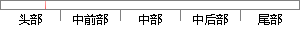

从表2-2可看出，ARM处理器工作在不同工作模式下所使用的寄存器是不同的。
片段位置图

相似结果
相似片段：6 2.1.2 ARM处理器的工作模式及寄存器 ......ARM中异常中断如表 2-2所示。 表 2-2 ARM异常处理...(同步启动时),可以看出其 SDRAM 的起始物理地址为...
| 标题 | 《基于EP9315的Linux2.6内核的BSP开发》 |
| 对比库 | 中国学位论文全文数据库 |
| 作者 | 孟凡金 |
| 机构 | 哈尔滨工业大学 |
| 分类 | 微电子学与固体电子学 |
| 年份 | 2006 |
| 相似率 | 65.38% （轻度抄袭） |
※ 片段修改建议 ※
近似词参考：- 使用：利用
- 工作：事情
- 不同：分歧 差别
系统自动生成语句： 从表2-2可看出，ARM处理器事情在分歧事情模式下所利用的寄存器是分歧的。
注：本片段修改建议为系统自动生成，仅供参考。